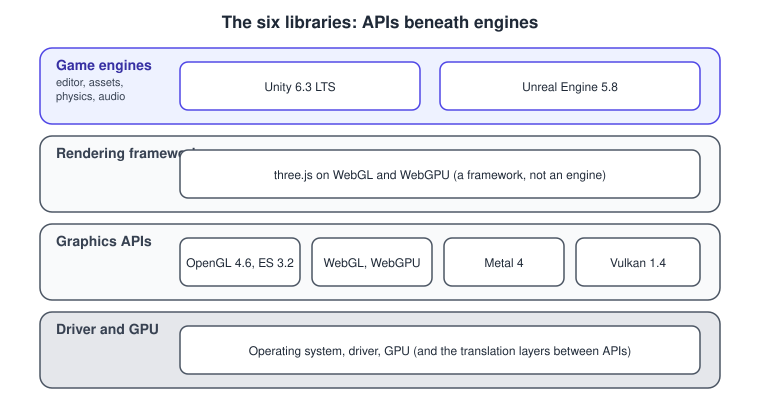
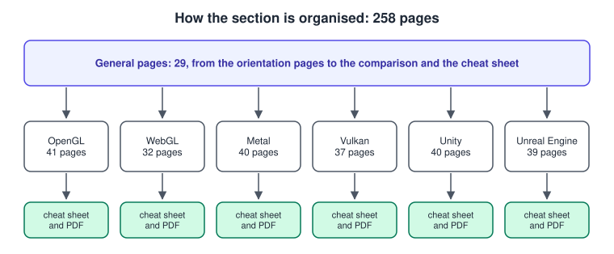
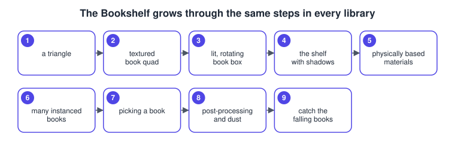

Graphics & Games Overview
|
This content was generated with the assistance of AI and should be verified against the official documentation before being relied on in production. |
This page holds the conceptual material of the Graphics & Games section: how graphics APIs, rendering frameworks and game engines relate, the versions every page targets, the learning path through the general pages, the shared Bookshelf scene, and the maps from concepts to pages. The general concept pages (for example The Rendering Pipeline and Vectors, Matrices and Homogeneous Coordinates) stay at the section level and are linked from the learning path and the concept-to-page map below.
Graphics APIs and game engines
A graphics API is the programming interface to the GPU. It exposes buffers, textures, shaders and commands, and it leaves everything else to you. OpenGL, OpenGL ES, WebGL, WebGPU, Metal, Vulkan and Direct3D are graphics APIs. A game engine sits above one or more APIs and adds the parts of a game that are not drawing: an editor, an asset pipeline, a scene system, physics, audio, animation, scripting and one-click builds for many platforms. Unity and Unreal Engine are engines. Between the two lie rendering frameworks such as three.js, which give you meshes, materials and a camera without taking over the whole project, and scene-graph APIs such as the historical Java 3D, which draw a tree of objects for you.

The page Graphics APIs vs Game Engines defines the levels in detail and Choosing an API or Engine explains how to pick one.
The six libraries
| Library | Version covered | What it is |
|---|---|---|
OpenGL 4.6, OpenGL ES 3.2, GLSL, EGL |
The long-standing cross-platform API. Frozen at 4.6 on the desktop, deprecated on Apple platforms, and still the base of OpenGL ES on Android and embedded devices. |
|
WebGL 1 and 2, three.js, WebGPU |
3D graphics in the browser, the three.js framework on top of it, and WebGPU as the successor API. |
|
Metal 4, MSL 4.1 |
Apple’s API for iOS, iPadOS, macOS, tvOS and visionOS. |
|
Vulkan 1.4, SDK 1.4.363.0 |
The explicit, cross-platform Khronos API for desktop, mobile and embedded GPUs. |
|
Unity 6.3 LTS, with changes up to 6.6 |
A general-purpose game engine with C# scripting and the Universal Render Pipeline. |
|
Unreal Engine 5.8, hotfix 5.8.4 |
A game engine with C++ and Blueprint scripting, Nanite and Lumen. |
OpenGL
The OpenGL sub-section teaches desktop OpenGL 4.6, OpenGL ES 3.2, GLSL and EGL in 41 pages around one running example, Bookshelf GL, from a first triangle to a small game. It also explains where OpenGL stands in 2026 and how to port to Vulkan, Metal and WebGPU. Start with the OpenGL landing page, keep the OpenGL Cheat Sheet at hand, and read What Has Changed Since the Older OpenGL Guides if you come from a book written before 2020.
WebGL
The WebGL sub-section teaches raw WebGL 2 with GLSL ES 3.00, the three.js library (r187)
and WebGPU as the successor API in 32 pages, around two tracks of one running example, the Bookshelf, from a first triangle to
a small game. It also explains where WebGL stands in 2026 and which parts of three.js work with WebGPURenderer. Start with the
WebGL landing page, keep the
WebGL & three.js Cheat Sheet at hand, and read
What Has Changed Since the Older WebGL and three.js Guides if
you come from a book written before 2020.
Metal
The Metal sub-section teaches Metal 4 with MSL 4.1 and Xcode 27, and the Metal 3 equivalent where code must still run on older devices, in 40 pages around one running example, the Metal Bookshelf, a multiplatform SwiftUI app that grows from a first triangle to a small game and a visionOS version. It also covers MetalKit, MetalFX, ray tracing, mesh shaders, the debugging tools and porting from OpenGL and DirectX. Start with the Metal landing page, keep the Metal Cheat Sheet at hand, and read What Has Changed Since the Older Metal Guides if you come from a book written before 2025.
Vulkan
The Vulkan sub-section teaches Vulkan 1.4 with Vulkan-Hpp RAII handles, the Vulkan Memory Allocator and Slang, GLSL and HLSL shaders in 37 pages around one running example, the Vulkan Bookshelf, a C++20 program that grows from a first triangle to a small game. It also covers synchronization2 and timeline semaphores, bindless descriptors, ray tracing, mesh shaders, Vulkan Video, Android, MoltenVK and KosmicKrisp on Apple platforms, Vulkan SC and the debugging tools. Start with the Vulkan landing page, keep the Vulkan Cheat Sheet at hand, and read What Has Changed Since the Older Vulkan Guides if you come from a book written before 2020.
Unity
The Unity sub-section teaches Unity 6.3 LTS with URP and the Input System in 40 pages around one running example, the Bookshelf, a whitebox shelf that grows into a small game, "Shelve-it", and then a DOTS, a co-op, a Web and a Quest version. It also covers the render pipelines, Render Graph, UI Toolkit, Addressables, profiling, testing, the plans and the Runtime Fee, and it marks what changed up to Unity 6.6. Start with the Unity landing page, keep the Unity Cheat Sheet at hand, and read What Has Changed Since the Older Unity Guides if you come from a book written before Unity 6.
Unreal Engine
The Unreal Engine sub-section teaches Unreal Engine 5.8 with C++ base classes and Blueprint subclasses in 39 pages around one running example, the Bookshelf, a book actor that grows into a co-op library packaged for Windows and Android. It also covers reflection and the gameplay framework, Nanite, Lumen and MegaLights, Enhanced Input, Chaos, World Partition, StateTree, Mass, the Gameplay Ability System, replication and Iris, the licence and the announced UE6. Start with the Unreal Engine landing page, keep the Unreal Engine Cheat Sheet at hand, and read What Has Changed Since the Older Unreal Engine Guides if you come from a book written before UE5.

Targeted versions
The pages target the versions below. The facts and links of most rows were checked on 1 November 2026; the Unity and Unreal Engine rows were re-checked on 5 November 2026, as their landing pages state. Items described as a candidate or a draft are not final specifications and are described from the publishing body’s own pages.
| Component | Version and status | Source |
|---|---|---|
OpenGL, Vulkan, Metal |
OpenGL 4.6 (final), Vulkan 1.4, Metal 4 |
|
WebGPU |
W3C Candidate Recommendation Draft (15 September 2026). Available in Chrome and Edge 113 or later, Firefox 141 or later on Windows, and Safari 26. |
|
glTF |
2.0, also ISO/IEC 12113:2022. The core is PBR metallic-roughness, extended by |
|
OpenUSD |
26.11, with the AOUSD Core Specification 1.0 |
|
OpenXR |
1.1 (15 April 2024), with patch releases continuing through 2026 |
|
SPIR-V and DirectX |
SPIR-V 1.6. Microsoft announced on 19 September 2024 that Shader Model 7 will adopt SPIR-V. |
|
Slang |
A Khronos project since November 2024, shipped in the Vulkan SDK |
|
RenderDoc |
1.47: Vulkan, Direct3D 11 and 12, OpenGL and OpenGL ES, but not Metal |
|
Java 3D |
Community-maintained by JogAmp, 1.7.2 on JOGL 2.6 (last release September 2024). Sun’s last build was 1.5.2 in 2008. |
|
ARCore |
1.56.0, and ARCore for Jetpack XR 1.0.0-rc02 (7 October 2026) |
|
three.js |
r187 |
|
Unity |
6.3 LTS |
|
Unreal Engine |
5.8 (17 June 2026), hotfix 5.8.4 (20 October 2026) |
Engine market shares come from the GDC State of the Industry and JetBrains State of GameDev reports; this section cites them only from those primary reports.
Learning path
The general pages can be read in the order below. Each page is also written to be read on its own, with links to the pages it depends on.
Reading order
-
Start with Graphics APIs vs Game Engines and History of Real-Time Graphics to learn the vocabulary and how the field arrived where it is.
-
Learn how the hardware and the pipeline work with GPU Architecture Basics and The Rendering Pipeline, then Advanced Pipeline Stages and Explicit vs Implicit Graphics APIs.
-
Read the mathematics: Coordinate Spaces and Transforms, Vectors, Matrices and Homogeneous Coordinates and Rotations & Quaternions.
-
Learn the content side: Meshes & Vertex Data, Textures, Sampling & Mipmaps, Lighting & Shading Models, Shadows and Global Illumination, Color Spaces, HDR and Tone Mapping and Transparency, Blending and Post-processing.
-
Continue with Shading Languages Landscape and Scene Graphs and Asset Formats.
-
Move to games with The Game Loop and Frame Timing, Entity Component System, Physics, Audio and Input Basics and Augmented and Mixed Reality Basics.
-
Finish with Cross-Platform Translation Layers, Choosing an API or Engine and Performance and Profiling. Keep the Glossary open while you read, and see What Has Changed Since the Older Guides if you come from a book or tutorial written before 2020.
-
Compare the options in Graphics APIs and Game Engines Comparison and pick a library. OpenGL is the gentlest way to learn the concepts by hand, WebGL needs only a browser, Metal suits Apple platforms, Vulkan gives the most control, and Unity and Unreal Engine are the route to a finished game. Each sub-section has its own learning path and repeats the Bookshelf, so the same steps can be compared across libraries.
Cheat sheets
The Graphics & Games Cheat Sheet links every general page and has a one-page PDF. Each library has its own: the OpenGL, WebGL & three.js, Metal, Vulkan, Unity and Unreal Engine cheat sheets.
The Bookshelf scene and shared assets
All pages share one original scene that grows into a tiny game, so the same concept can be compared across libraries. The Bookshelf is a wooden shelf holding textured books (cover, spine and page textures), lit by a desk lamp. The general pages describe it conceptually and show neutral pseudocode, GLSL or WGSL; the library parts build it step by step:
-
a triangle
-
a textured book quad
-
a lit, rotating book box (model-view-projection transform and Blinn-Phong lighting)
-
the shelf with shadows
-
physically based materials
-
many instanced books
-
picking a book
-
post-processing and particles ("dust")
-
a tiny game, "catch the falling books", with a score and a timer

Every library part uses the same original assets, made for this site and free of licence restrictions:
-
bookshelf.glb: a glTF 2.0 binary of 70 KB with a shelf made of six boards and nine book nodes that share one book mesh. It has four materials (wood for the shelf, and cover, spine and pages for the books) using the PBR metallic-roughness model, with the textures embedded.
-
The base-colour textures as PNG files in sRGB: wood and cover (256 by 256 pixels), and spine and pages (64 by 256 pixels).
-
A tangent-space normal map for the cover as a linear PNG (256 by 256 pixels), derived from the cover texture and not embedded in
bookshelf.glb.


The textures are published as PNG because the KTX 2.0 command-line tool was not available when the assets were produced.
To get KTX 2.0 versions, convert the PNG files yourself with toktx (or ktx create from the KTX-Software tools), choosing
Basis Universal compression or a GPU format such as BC7 or ASTC; the page
Textures, Sampling & Mipmaps explains the formats and the page
Scene Graphs and Asset Formats walks through the structure of
bookshelf.glb.
Concept-to-page map
Orientation
| Page | Covers |
|---|---|
Rendering API, framework, scene-graph API and engine; retained and immediate mode. |
|
IRIS GL to WebGPU, fixed function to programmable shaders, engines and scene graphs. |
|
The cross-cutting changes and the corrections for the three general books. |
|
Definitions of the terms used across the general pages. |
GPU and pipeline
| Page | Covers |
|---|---|
CPU and GPU, SIMT, memory hierarchy, tile-based rendering, command buffers and queues, the driver. |
|
Input assembly to blending, with the stage names of each API. |
|
Tessellation, geometry, compute, mesh and task shaders, ray tracing and ray queries. |
|
State machines against pipeline objects, descriptors, synchronisation and memory. |
Mathematics
| Page | Covers |
|---|---|
Object to window space, handedness, clip depth ranges, Y-flip, viewport. |
|
Dot and cross products, 4 by 4 matrices, storage conventions, perspective divide, reversed-Z. |
|
Euler angles, gimbal lock, axis-angle, quaternions, slerp, look-at. |
Content
| Page | Covers |
|---|---|
Vertices, indices, topologies, winding, attributes, instancing, level of detail. |
|
Texels, wrap modes, filtering, mip chains, cube maps, compressed formats, render targets. |
|
Lambert, Phong, Blinn-Phong, normal mapping, glTF PBR, image-based lighting. |
|
Shadow mapping, bias, filtering, cascades, ambient occlusion, lightmaps, ray-traced shadows. |
|
Linear workflow, sRGB, HDR formats, tone mapping operators, Display P3. |
|
Blend equations, sorting, order-independent transparency, anti-aliasing, bloom, deferred and forward+ shading. |
|
GLSL, HLSL, MSL, WGSL, Slang, SPIR-V, DXIL and cross-compilers. |
|
Transform hierarchies, bounds, glTF 2.0, OpenUSD, FBX, OBJ, Gaussian splats. |
Games and XR
| Page | Covers |
|---|---|
Fixed and variable timesteps, interpolation, vsync, frame pacing. |
|
Components, archetypes, data-oriented layout, ECS in the engines. |
|
Rigid bodies, colliders, picking, spatial audio, input abstraction. |
|
Tracking, anchors, OpenXR, WebXR, ARCore, the AR camera projection. |
Coverage map
Official documentation areas
| Area | Official documentation | Pages |
|---|---|---|
Rendering pipeline |
WebGPU rendering operations, the Vulkan specification pipeline chapters, Metal documentation, Direct3D 12 pipelines (context only) |
The Rendering Pipeline, Advanced Pipeline Stages, Explicit vs Implicit Graphics APIs |
Shading languages |
GLSL, WGSL, MSL, HLSL, SPIR-V and Slang |
|
Assets and scenes |
glTF 2.0 including the BRDF appendix, glTF Sample Assets, KTX 2.0, OpenUSD |
Scene Graphs and Asset Formats, Textures, Sampling & Mipmaps |
Colour |
WebGPU canvas colour space and tone mapping, the Khronos PBR Neutral tone mapper, sRGB |
|
Extended reality |
OpenXR, WebXR, ARCore, Android XR |
|
Translation layers |
ANGLE, MoltenVK, KosmicKrisp, Dawn, wgpu, Vulkan Portability |
|
Profiling |
RenderDoc, Xcode Metal debugger, PIX, Android GPU Inspector |
|
Platforms and data |
Android graphics, Apple Metal, gpuinfo.org, Steam Hardware Survey, Stack Exchange API |
Concepts from the three general books
The books are Selman’s Java 3D Programming (J3P), Sun’s The Java 3D API Specification 1.3 (J3S) and Sood’s Pro Android Augmented Reality (PAR-AR). They are listed in the bibliography below. The table shows the chapters that contribute each concept and the page that covers it.
| Concept | Book chapters | Pages |
|---|---|---|
API against scene-graph abstraction |
J3P 1 and 18; J3S 1 and 13 |
|
History |
J3P 1 |
|
Pipeline |
J3P 2 and 18 |
|
Projection, coordinate spaces and the view model |
J3P 2; J3S 9 and appendix C |
Coordinate Spaces and Transforms, Vectors, Matrices and Homogeneous Coordinates |
Quaternions and interpolators |
J3P 12; J3S appendix A |
|
Geometry and vertex formats |
J3P 8; J3S 8 |
|
Textures and mipmaps |
J3P 14 |
|
Lighting equations |
J3P 2 and 10; J3S appendix E |
|
Transparency and blending |
J3P 9 |
|
Scene graphs, bounds, level of detail and culling |
J3P 4 to 6 and 11; J3S 2 to 7 |
|
Model loaders (OBJ) |
J3P 15; PAR-AR 8 |
|
Behaviours, animation and the game loop |
J3P 11 to 13; J3S 10 and 13 |
|
Picking and collision |
J3P 16; J3S 11 |
|
Audio |
J3S 12 |
|
Input devices and sensors |
J3S 11; PAR-AR 2 and 4 |
Physics, Audio and Input Basics, Augmented and Mixed Reality Basics |
Head-mounted view model, AR sensors, markers, geolocation |
J3S 9 and appendix C; PAR-AR 1 to 9 |
|
Performance and render threads |
J3P 18 |
Where these books are out of date, the page that covers the concept says so in a table, and What Has Changed Since the Older Guides collects the corrections.
Concepts in the six libraries
Each general concept page ends with a "See it in" line. This table collects those lines: the first column is the general page, the second is where each library applies the concept.